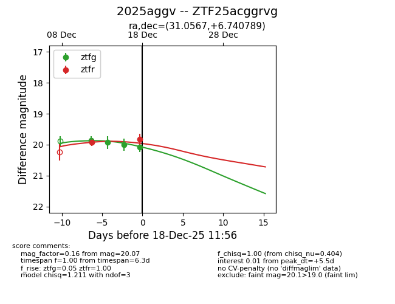
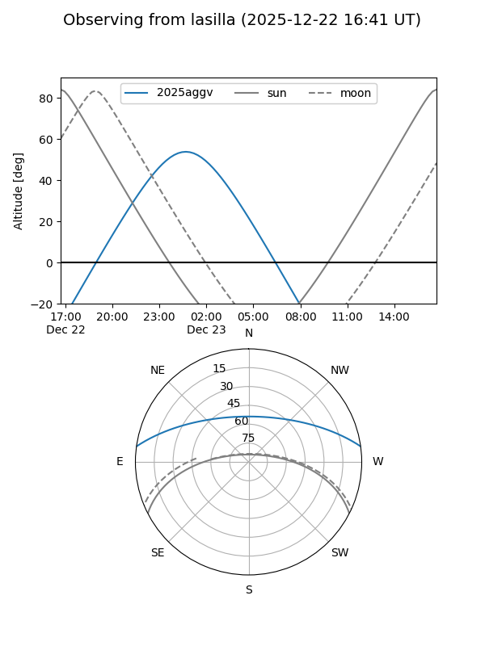
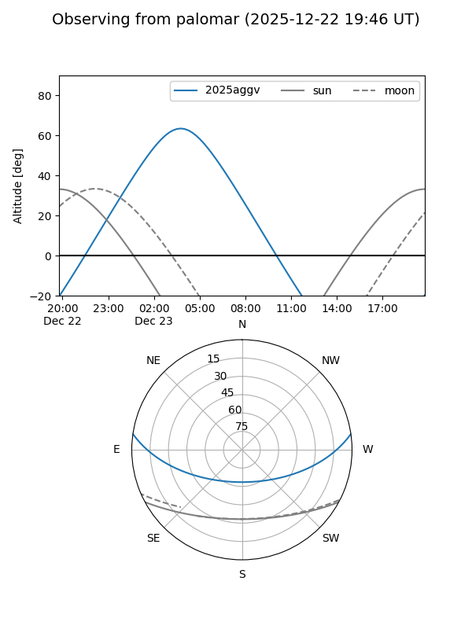
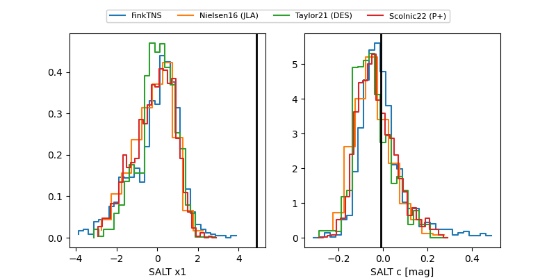

2025aggv
Target 2025aggv at 2025-12-22 15:11
Aliases and brokers:
FINK: fink-portal.org/ZTF25acggrvg
Lasair: lasair-ztf.lsst.ac.uk/objects/ZTF25acggrvg
ALeRCE: alerce.online/object/ZTF25acggrvg
TNS: wis-tns.org/object/2025aggv
YSE: ziggy.ucolick.org/yse/transient_detail/2025aggv
alt names
ZTF25acggrvg (ztf,fink_ztf)
2025aggv (tns,yse)
Coordinates:
equatorial (ra, dec) = 31.0567,+6.74079
equatorial (HMS+DMS) = 02:04:13.60,+06:44:26.84
galactic (l, b) = (153.0483,-51.82351)
Flags:
Photometry:
last ztfg=20.07, ztfr=20.11
4 ztfg, 4 ztfr detections
Lightcurve

Visibility


Additional plots
